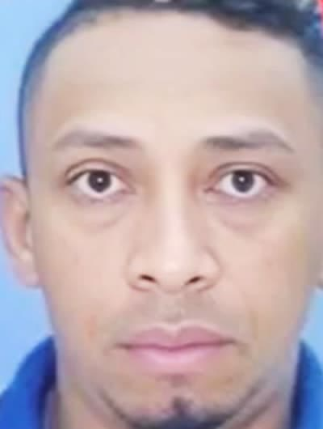

Jan 8, 2026 · Willy's recordings
I'm not asking you to make an alliance, because as the police you have to do your job. If we steal, lock them up. If we kill, lock them up.
William Jofre Alcívar Bautista, alias Willy, the alleged leader of Los Tiguerones, was captured in Tarragona in October 2024 on two Interpol red notices. On December 29, 2025, Spain released him because Ecuador failed to provide the guarantees Spain's National High Court required to extradite him. Ten days later, Andersson Boscán and Mónica Velásquez published a call Willy made to them a couple of years ago. In it he describes pacts with the government of the time to bring down killings on weekends, proposes a deal to the police to control the streets and says that police commander Tannya Varela got along well with Fito and with Junior Roldán.

William Jofre Alcívar Bautista was born in March 1989. He is known as Negro Willy, W or Comandante Willy. He is 36. He did not start out selling drugs on a street corner: he landed a stable government job as a prison security officer at the Penitenciaría del Litoral in the 2010s. His task was to keep order in one of Ecuador's most dangerous prisons.
There he met Jorge Luis Zambrano, alias Rasquiña, the lord and master of the cellblocks. As a guard, he secured perks and privileges for Los Choneros and became the trusted man of Rasquiña, whom he still fondly calls the boss. Rasquiña gave him access to a cellblock. In Ecuador's prisons, controlling a cellblock means having a thousand people at your disposal: they make calls, threaten and extort on the leader's behalf, and pay him a weekly fee of between 20 and 60 dollars. Those who cannot pay end up selling drugs for the organization, and their families along with them.
By 2015 he was no longer a guard but a prisoner, prosecuted for drug trafficking and murder. His first alias was Peladito. In 2019 an Ecuadorian judge released him. That same year, on May 27, there was a mass escape from the Penitenciaría del Litoral. Among the escapees was Luis Ernesto Alcívar Bautista, alias La Puya, one of his brothers. Investigations have always pointed to Willy as one of those responsible for that escape.
Alias Willy was not a person, he was a family. The father, William Jofre Alcívar, sentenced to five years for organized crime. William, the eldest son, the alleged leader. Alex Iván, alias Ronco, second in command, also captured in Spain. Luis Ernesto, alias La Puya, operations coordinator, believed to be running the gang in Ecuador today. By 2024 Los Tiguerones controlled territory in Guayas and Esmeraldas, recruited children as young as eight to sell drugs and carry out contract killings, set off car bombs and were linked to the takeover of TC Televisión, whose attackers took orders by phone from someone calling himself La Firma, another alias attributed to Willy. The gang denies the takeover. In January 2024 Daniel Noboa's government added Los Tiguerones to the list of Ecuador's 22 terrorist organizations.
Excerpts from the January 8, 2026, show, at the exact minute each part of the call was played. The audio is from the show: Willy can be heard, with the studio conversation over him.
A couple of years ago Willy called Andersson Boscán. It was the only time they spoke by phone. Boscán & La Moni published the excerpts on January 8, 2026, from exile and without breaking source confidentiality. In the first part, Willy talks about Esmeraldas as territory that belongs to him. He says the police turned against him, that nobody has wanted to talk to him and that he is not asking for an alliance, because the police have to do their job: if they steal, lock them up; if they kill, lock them up. But for the street hustle he asks for something else.
If we're going to talk about the hustle, about street stuff, help us control what's going on. You have to know that we have control of the city.
Alias Willy, in the call published on January 8, 2026
Willy complains about Los Patones, a rival family in Esmeraldas that, he says, at first begged him not to kill them and grew because the police don't go after them. Almost all his people are in prison, he says, but he keeps control of the neighborhoods and part of La Ribera. Andersson Boscán puts it this way: every time the police run an operation against one gang, they are very likely clearing the way for the competition. That is why, he says, there are times when the police focus on Los Choneros and benefit Los Lobos, or the other way around.

WillyThe second part is the most serious. Willy says that the national government of the time, the one before Daniel Noboa's, would call the gangs to ask them to ease off on weekends so there would be no deaths. And that afterward they would send the report: only four dead in Guayaquil, it went down a lot, work with us, help us. Boscán points out that 2023 statistics show unexplained drops on some weekends, with two or three killings, in a country where the average today is 28 murders a day.
Look at the routine report: only four dead in the city of Guayaquil. It went down a lot. Please, work with us there, help us.
Alias Willy, quoting the messages they received from the government, in the call published on January 8, 2026
Then he asks about the head of the police, the woman. Tannya Varela. With her, he says, there was a love affair with Los Tiguerones, because she got along well with Fito and with Junior. He quotes what she allegedly told them: that she could look out for Junior and Fito for helping her with many things, but that the law was for everyone and she couldn't show the other team that she wanted to attack them. And he recalls the complaint about the murals: they were ordered to erase theirs, while the Águilas and the Fatales were not.
I'm not asking you to make an alliance, because as the police you have to do your job. If we steal, lock them up. If we kill, lock them up.
But if we're going to talk about the hustle, about street stuff, help us control what's going on. You have to know that we have control of the city.
Almost all my people are in prison, and what we have under control is all the neighborhoods and part of La Ribera.
They would call and say: "Ease off this weekend, try to make sure there are no deaths."
"Look at the routine report: only four dead in the city of Guayaquil. It went down a lot. Please, work with us there, help us."
What was the name of the one who was police chief, the woman?
Tannya Varela.
Right, Varela. A love affair with the Tiguerones. Why? Because she got along well with Fito, with Junior.
"You know, Junior, you know, Fito, I can look out for you for helping me with a lot of things, but here the law is for everyone. I can't show the other team that I want to attack you."
Why don't they erase all the murals? Why don't they erase the Águilas' murals, the Fatales' murals?
Timestamps are estimated from the length of each excerpt; the actual length of the call and its exact date were not disclosed. The excerpts are transcribed as they were published on January 8, 2026, in the order the show presented them.
Fito has been extradited. Junior Roldán is supposedly dead, with the emphasis on supposedly. Tannya Varela is known today for the León de Troya case, a judicial proceeding in which she was accused of leaking information that ended up protecting drug traffickers, especially the Albanian mafia, and which was shelved. Mónica Velásquez made it clear on air: Varela has never been formally accused of corruption or complicity with criminal gangs, although her name has been informally linked to organized crime for years.
In October 2024, in Tarragona, Spain's Guardia Civil, working with Ecuador's National Police, had spent months tracking two Ecuadorian brothers in a luxury housing development. They were Negro Willy and Ronco. According to BBC Mundo, they had been in Spain for more than a year, had set up a legally registered transport and parcel company, lived in expensive residential areas, drove high-end vehicles and paid cash at luxury restaurants.
They were discovered because they were so careful. According to a report in El País attributed to Spanish intelligence sources, neighbors noticed that before leaving they would check three, four, five times that no one was coming, that the car would circle the block two or three times and that on the highway they would take off at 140 or 145 kilometers per hour so no one could follow them. The police alerted Interpol and found two of Ecuador's most wanted men, accused of planting car bombs.
On June 23, 2025, Spain's National High Court approved the extradition to Ecuador with one condition: the country had three months to effectively guarantee Willy's life and physical safety and the normalization of its prison system under the monitoring standards of the IACHR. Real guarantees, not more court papers, as specified in the ruling published on September 17, 2025, by the General Council of the Judiciary. While Ecuador was supposed to document that, it was reporting twelve prisoners dead by suicide at the same time in one prison, beheadings at El Rodeo and escapes.
The deadline expired on December 22 and, according to several outlets, including Ecuavisa, Ecuador failed to deliver. On December 29, 2025, Willy regained his freedom. Today he is somewhere in Europe, required to report once a week, with a phone and internet access. He can make calls as he did in the past. The National Court of Justice said two requests were handled on time; the police, that they sent the information to the Foreign Ministry promptly; the Foreign Ministry, in a January 7 statement, that it did send the documentation. Spain's prosecutors maintain that what they asked for were guarantees that Willy would not be murdered on arrival at an Ecuadorian prison.
I am not intimidated by the threats against my life that he has sent me. We are not intimidated by the threats he is sending against the president of the Republic. That is the kind of criminal they have on Spanish soil.
John Reimberg, interior minister, January 7, 2026, quoted on the show
Interior Minister John Reimberg reacted with visible irritation. He said information was requested in June 2025 and all the documentation was sent, asked whether Spanish citizens want a criminal guilty of terrorism, contract killing and drug trafficking on their soil, and said that he and the president of the Republic have received threats from Willy.
Willy is free in Europe. The extradition failed, and Ecuador and Spain are passing the buck. The recordings show a drug trafficker who openly acknowledges deals with the police and with a government, deals that included reducing killings to improve the statistics. Andersson Boscán said it in closing: at certain moments, the police's statistical results have come hand in hand with deals that run through organized crime, under previous governments and, unofficially, under the current one too.
The violence did not go down. The day before publication, a person was murdered on a busy road in Quito, and men in pickup trucks with rifles went in to kill on Mocolí island, a residential area where people felt safe. As far as was said on air, there is no open investigation into what Willy describes in the call. Tannya Varela has not been formally accused of any of this.
Updated September 5, 2026
Years later he will become a prison guard at the Penitenciaría del Litoral.
Meets Rasquiña in prison; is given control of a cellblock.
Prosecuted for drug trafficking and murder.
An Ecuadorian judge sets him free.
His brother alias La Puya escapes. Willy is named as responsible.
Phone orders from "La Firma". Los Tiguerones deny the takeover.
Noboa's government adds Los Tiguerones to a list of 22 organizations.
The Guardia Civil captures Willy and Ronco in a luxury housing development.
The National High Court gives Ecuador three months to guarantee his life.
Ruling by the General Council of the Judiciary: no more paperwork, verifiable guarantees.
According to Ecuavisa and other outlets, Ecuador did not deliver the documentation.
Spain releases him, with weekly check-ins.
The minister talks about threats; the Foreign Ministry says it did send the documents.
Boscán & La Moni publish Willy's call.
Alias Willy, Negro Willy, W, Comandante Willy. Former prison guard, alleged leader of Los Tiguerones.
Commander general of the National Police at the time of the call. Willy says she got along well with Fito and Junior.
Interior minister.
"The boss." Made Willy his right-hand man at the Penitenciaría.

Named by Willy as close to Varela.
Named by Willy along with Fito.
Willy's brother, second in command.
Willy's brother, operations coordinator. Escaped in 2019.
Photos via Wikimedia Commons. Alias Fito: Penitenciaría (CC BY-SA 4.0).
Information was requested in June 2025 and all the documentation was sent. He said Willy has threatened him and the president of the Republic, and that he is not intimidated.
In a January 7, 2026, statement it said it did send the documentation Spain required.
The court said two requests were handled on time; the police, that the information was sent to the Foreign Ministry promptly.
They maintain that they asked Ecuador for guarantees that Willy would not be murdered on arrival at an Ecuadorian prison.
They have denied the TC Televisión takeover.
No response appears in the show. Mónica Velásquez noted that she has never been formally accused of corruption or complicity with criminal gangs.
Okay, who is alias Willy? How did he become one of the narco-terrorists most wanted by the police, accused by the police of horrific crimes, among them the takeover of TC Televisión on January 9, 2024? uh how is it that he's in Spain, how is it that they caught him and who uh in the National Police he had a relationship with, in his view, in a conversation we had a few years ago. We'll tell you this and more right away. Good…
Read the full transcriptTranscripts from each show's automatic captions. They have not been corrected by hand: use them to find a phrase and jump to the exact minute in the video, not as verbatim quotes.
Willy checks in once a week in Europe. Ecuador and Spain blame each other for the failed extradition.
None of what Willy describes, the pacts with the government and the police or Varela's closeness to Fito, is the subject of any known investigation.
The first time anyone entered the cellblocks without state custody
2021The generals who shut down León de Troya and the commander the drug traffickers called the godmother
2025The bunker, the letter, the video call and the plane to Brooklyn
The relationship map reproduces what Willy claims in the call and what Andersson Boscán and Mónica Velásquez reported on air based on police, court and press sources. The audio excerpts are transcribed as attributed statements. The exact date of the call was not disclosed: the authors said it was a couple of years ago.